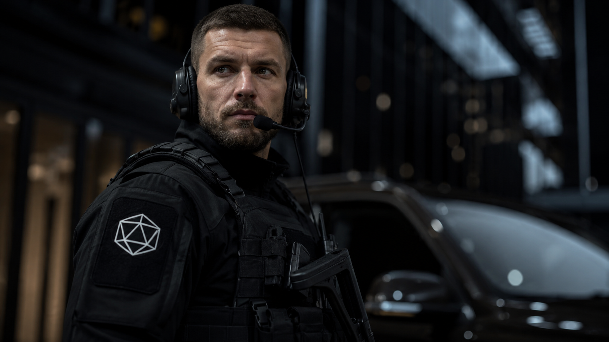

Global Security & Intelligence
Kairon Technology delivers elite security solutions, strategic intelligence, and advanced protection systems to governments and corporations worldwide.
About Kairon
Founded in Belfast, Northern Ireland, Kairon Technology has grown into a premier international firm operating across four continents. We combine human expertise with cutting-edge technology to safeguard what matters most.
Our multidisciplinary teams integrate physical security, cyber intelligence, and psychological operations to deliver seamless, layered protection strategies.
Discover Our StoryWhat We Do
Comprehensive on-site protection for high-value infrastructure, government facilities, and corporate headquarters using elite trained personnel and advanced sensor networks.
Discreet, world-class personal protection for heads of state, C-suite executives, and high-net-worth individuals operating in complex or hostile environments.
Proactive threat monitoring, digital forensics, and adversarial intelligence operations to neutralize cyber threats before they materialize.
Rapid-response units trained for high-risk extractions, facility security, and coordinated tactical interventions under extreme operational conditions.
Behavioral analysis, social engineering defense, and insider threat programs designed to fortify organizations against human-vector attacks.
Full Portfolio
Each engagement is customized to the client's threat profile, operational environment, and risk tolerance.
View All ServicesField Operations
Continuous perimeter defence and intelligence gathering for a critical energy infrastructure complex across three sovereign territories.
Multi-phase executive protection and intelligence support during high-stakes bilateral negotiations in an undisclosed Eastern European location.
Cyber-physical threat neutralization and infrastructure hardening for a sovereign wealth institution facing persistent state-sponsored adversaries.
Client Testimony
Kairon's intelligence team identified a threat vector six weeks before our own analysts. Their intervention prevented what could have been a catastrophic breach of our primary facility.
The executive protection detail assigned to our Chairman during the Southeast Asia negotiations was flawless. Professional, discreet, and deeply competent at every stage.
We engaged Kairon's cyber division following an undisclosed incident. Their forensic analysis and counter-intelligence response exceeded every contractual benchmark.
Engage Kairon